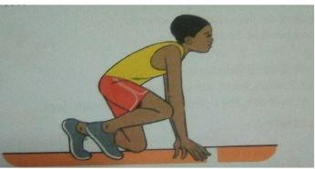
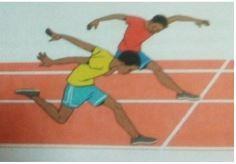

Bunch Start
Also known as the bullet start. In this start, the knee of the rear leg is opposite the toe of the leading leg. The hands are placed shoulder-width apart behind the starting line.
Safety Instructions
- Use your lane and stick to it.
- Wear appropriate physical education attire during the activity.
- Follow the teacher's instructions.
- Warm up adequately before participating in the activity.
Warm-up Activities
-
Running on the Spot
Learning points for running on the spot:
- Lift your right arm and left foot at the same time.
- Raise your knee.
- At the same time, move your right arm and your left arm forward and up.
- Switch to the opposite foot quickly.
- Start slowly as you increase speed.
- Continue these movements.
-
Rabbit Hops
Stand with feet shoulder-width apart. Keep your hands held at the chest. Take off with both feet and land with both feet.
Cool-down Activities
-
Slow March
Stand with feet shoulder-width apart, arms bent at the elbows. Bring your right elbow forward at the same time as you bring your left knee up. Repeat on the opposite side and keep alternating sides until there is a rhythm. Perform the activity very slowly.
Learning Points for the Bunch Start
- On your command, "On your marks," go to the starting line on a crouch position.
- Place the legs such that the toes of the rear foot are approximately in line with the heel of the front foot.
- Place both feet behind the starting line.
- Place the arms straight, shoulders-width apart with fingers spread behind the line and thumbs turned away.
- Keep the head in line with the body, eyes focused ahead down on the lane.
- On the "set" command, go into the ready position with the whole body and raise the hips just above the shoulders.
- On the "go" command, press hard against the ground for a forward push as you accelerate down the lane.
Drop Finish Technique
It is a method of finishing. The athlete bends, pushes both arms backward, and steps to the finishing line. They touch the tape with their chest.
- Approach the finishing line at full speed.
- Focus ahead.
- On finishing a step to the finishing line, bend and push both arms backward, and touch the finishing line with your chest first.
Safety Instructions
- Ensure proper spacing during drills and practice.
- Wear appropriate physical education attire during the activity.
- Follow the teacher's instructions during practice.
- Warm up adequately before participating in the activity.
Warm-up Activities
-
Plucking Partners' Tails
Each person tucks a tail into the back of their shorts or trousers. Run after a partner and try to pluck their tail while keeping yours safe. Play the game for one minute and change partners.
-
Squat Jumps
Start in a squat position with your arms by your side. Swing your arms towards the sky and jump. Land gently on the balls of your feet into a squat position and repeat the activity. Perform the activity for one minute.
-
Lateral Rabbit Jumps
Make small jumps side-by-side as if you are jumping over something. Keep your legs as close as possible. Swing your arms to help you jump.
Cool-down Activities
-
Curling and Stretching
Lie on the right side of the body. Fold your leg and pull them towards the chest. Slowly stretch your hands and feet. Repeat the activity a few times.
-
Slow Dance
Stand freely. Dance in slow motion for 30 seconds. Rest for 5 seconds and repeat.
Shoulder Shrug Technique
It is a method of finishing a race. The athlete, in his last stride, bends one shoulder so that his chest is turned sideways as it touches the tape or crosses the finish line.
Safety Instructions
- Ensure proper spacing during drills and practice.
- Wear appropriate physical education attire during the activity.
- Follow the teacher's instructions during practice.
- Warm up adequately before participating in the activity.
Warm-up Activities
-
High Knees
Jog in place, bringing your knees high up as you can.
-
Arm Rotation
Stretch out both arms to the shoulder level. Rotate them forward and backward.
-
Cross Jacks
Stand with feet shoulder-width apart, arms extended straight on either side with palms facing down. Jump and cross the right arm over the left arm, and the right foot over the left foot. Jump with the legs to the sides and open your arms, then cross with the opposite arm and foot.
Cool-down Activities
-
Copy Me
Take turns to demonstrate your favorite stretch. The others copy the demonstration. Do it slowly.
-
Slow Skip
Skip for a distance of 2 meters. Reduce the skipping distance and skipping speed slowly until you are in one place. Start marching slowly at that point and then stop.
Learning Points to Perform the Shoulder Shrug Technique
- Approach the finishing line at full speed.
- Focus ahead.
- On your last stride to the finishing line, bend one shoulder so that the chest is turned sideways as it touches the tape or as it crosses the finishing line.
Non-Visual Baton Exchange Down Sweep Method in Relays
This is where the outgoing runner receives the baton without seeing it being placed onto the hand. The hand that receives the baton carries it without bringing it to the other hand.
Learning Point for the Non-Visual Baton Exchange Method
The Incoming Runner
- Run at a speed within your lane.
- Reach the runner who is receiving the baton at full speed.
- Extend the hand carrying the baton and pass it onto the hand of the receiver in a downward movement.
The Outgoing Runner
- Extend the receiving hand behind, at the hip level, while focusing ahead and accelerating down the lane.
- The palm faces up, and a wide angle is formed between the thumb and the rest of the fingers.
- After the baton is placed on the receiving hand, hold it tight.
Safety Instructions
- Ensure proper spacing during drills and practice.
- Wear appropriate physical education attire during the activity.
- Follow the teacher's instructions during practice.
- Do not throw the baton to one another.
- Warm up adequately before participating in the activity.
Warm-up Activities
-
Pluck Partners' Tails
In pairs, take turns to run after each other, attempting to pluck a tail tied at the back.
-
Walking Knee Hugs
Make steps and raise the knee up, holding it with both arms and pulling towards your chest.
-
Cycling in the Air
Lie on your back. Raise your legs and move them as if riding a bicycle.
Cool-down Activities
-
Toe Touch
Reach up and touch down the sky for 20 seconds. Change and reach down to touch the toes for 20 seconds.
-
Climb the Staircase
Pretend to be climbing a staircase. Stretch your knees and arms.